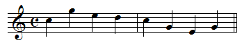

Fractal Music
Exercises by Hand
Phrase One

1. Scale the duration of Phrase One by a factor of 2. Click the staff to see the answer.
2. Scale the duration of Phrase One by a factor of
3/2
(use ties where necessary). Click the staff to see the answer.
Phrase Two
3. Scale the duration of Phrase Two by a factor of 2. Click the staff to see the answer.
4. Scale the duration of Phrase Two by a factor of
1/2.
Click the staff to see the answer.
Return to
Exercises
.